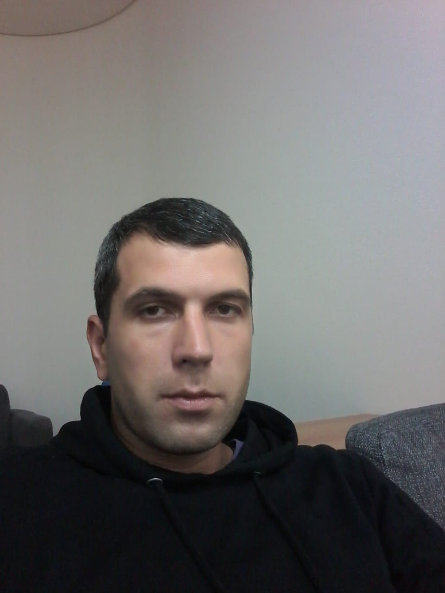

Иосиф Хачидзе. Логист

Обо мне
Я родился в Якутии в городе Мирный, в течении жизни приходилось много путешествовать ,в Великобритании проживал 7 лет,
это был хороший опыт в плане изучения английского языка, затем я переехал в РФ и со временем стал понимать что хорошо
оплачиваемую работу здесь найти очень трудно и тогда я стал интересоваться программированием т.к. в этой сфере деятельности
люди не особо зависят от их физического местоположения и есть возможность работать удаленно.
Образование
Cпециальность-Бухгалтерский учет
Опыт работы
2004-20011 год - Koyo Bearings Ltd
C 2018-го года по настоящее время-логист, компания BAT
Хобби
Футбол, кулинария
Как я становился разработчиком
- 18 января приступил к изучению html.
- 27 января приступил к изучению css
- 27 января приступил к изучению javascript
- Уровень английского языка-upper-intermediate